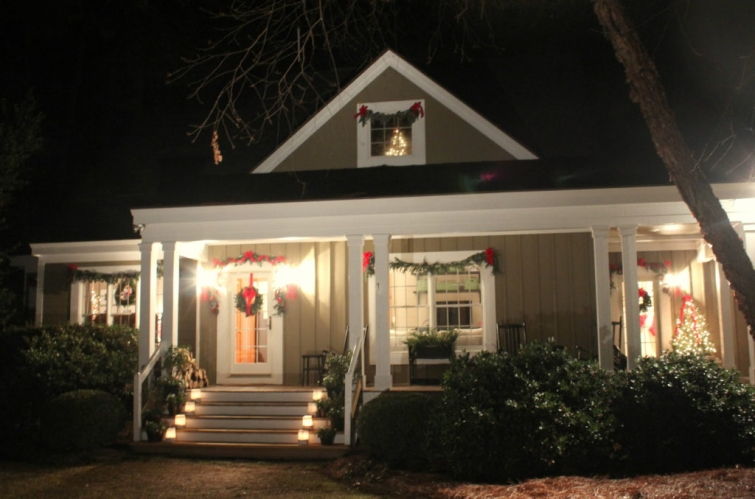

.png)
.PNG)
.PNG)
.PNG)
.PNG)
.PNG)
.JPG)
.JPG)
.PNG)
.PNG)



Yes…. we are still in full Christmas mode here…and will continue to be so for the next 10 days. I’ll tell you more about that when we get to the end of this post, but for now, I want us to just look back at Talk of the House for the 2017 year.
We kicked off last year in January with some decorating for New Year’s Day. That was followed by a look back at 2016. Then our family gained a new member….Gabbie the Labbie, and it was like having a new baby in the house!
(Oh my goodness…look how small she looks in these photos!).jpg)
In honor of our new puppy, I shared a post on dogs in decorating.

Then for the rest of January I shared posts about our trip to the Biltmore Estate in Asheville, North Carolina.

February began with that sad Falcons Super Bowl game.
(At least the party had good food and games!)

There were a couple more travel posts that month…one more on the Biltmore and the inn there and one on dining in Asheville.

Then we were back to decorating the house here,
first for Valentine’s Day with a fun movie theme….
 and then with yellow and green for spring.
and then with yellow and green for spring.

In March, we continued the Carolina tour with a post on the Pisgah Inn, Hendersonville, NC, and Lake Lure, one on Wilmington, NC, and two on beautiful Charleston, SC.

Back at the house, because I like to change things up around here, I redecorated some spaces again for spring and shared it with you in a post about fickle females.
 We looked at some green tablescapes for St. Patrick’s Day.
We looked at some green tablescapes for St. Patrick’s Day.

We explored the wonderful gardens at Charleston’s Magnolia Plantation.

We hosted a doughnut themed birthday party for my doughnut loving mother,

and for the final post of the month we explored the Disney resort on Hilton Head Island in South Carolina.

That was the last of the travel posts for the year.
April began with the first of three posts about decorating our house for Easter.
(I used a lot of blue and green for a change!)

After that, I shared with you a gorgeous Tennessee farmhouse that I had been admiring for awhile on Instagram.

All during the year, my husband had been working tirelessly on repairing and painting the exterior of our home. It was becoming apparent to me that the exterior work wasn’t going to get finished without some help. So I then announced that the blog was going to have to go on the back-burner while I tried to help out with the painting and yard work. The next post in April announced my blogging break and left you all with some “recommended reading.”

In May, I was able to tour James Farmer’s yard in a spring garden tour. So I hopped back on the blog long enough to share his house and garden with you.

I spent most of the summer mowing our yard, mowing my parents’ yard and pasture, and painting part of our house, but I did manage to decorate for summer and share that with you in two posts in July.

The outside chores continued on through hot and humid August, but I did find time to share a very fun school themed wedding celebration for some friends of ours who had married earlier in the year. That was my only post for August and September.

In late October, I could finally cut back on the grass mowing (“cut back” get it? 🙂 …sorry I couldn’t resist that.) The exterior painting still continued, but I fit in decorating the house for Halloween and shared a post about that with you.

The outside Halloween decor didn’t make it into October’s blog posts, but it did appear on the first of November. (Better late than never, right? 🙂 )

And then there were 2 posts later in the month sharing all the Thanksgiving decorating around here.


We made a trip to very snowy Vermont for a few days in December, but I was still able to get everything decorated for Christmas and write three posts to show you all of the holiday decor here.
And now that brings us to the end of 2017 but not the end of the exterior work on the house. 🙁 When we started this, all of the stairs needed to be replaced along with the handrails that go with them, and now I am wanting the railing on the back deck also reconstructed in a different style. Countless boards have had to be replaced due to the fact that they were rotting. The house will be better than it was when it was new when we finish. 🙂 If I can get a couple of days with mild temperatures, I can finish the long side of the house since I have done all of the trim work there, and that will pretty much leave just the back to go (and I have already done the screened porch on the inside.) My husband says the end is in sight, but I am not so sure about that. 🙁 At least there is no grass to mow for awhile!

I mentioned at the start of this post that our Christmas decorating will be up for 10 more days. That is because we have a photo shoot on the 12th for a holiday magazine (to be published next year.) I am afraid I do not know the name of the publication because there were a whole bunch of them this year that sounded the same, but I do know it is a special edition type – not a regular subscription one. I will let you know when I know the name for sure. 🙂 Fingers crossed our trees are not totally crispy dead by the time they get here on the 12th!
Thank you sooo much for reading the posts here this year along with the year in review today. 2017 was by far my most challenging year to keep up this blog since I started it almost 6 years ago. I hope 2018 brings an end to our house upkeep projects and more time for fun things! And I hope your new year is filled with laughter and fun times that bring a smile to your face. 🙂
Happy New Year friends!


.PNG)
Thanks for your inspiration. Love your house. Looking forward to next post!
Congratulations on the magazine! I can definitely see why they picked you. Your home is always so inspiring. Gabbie is such a sweetie. I remember when my golden was a puppy and you are right, it is like having a baby in the house! Best wishes for 2018!
Shelley
Thanks for sharing!! I don’t always have time to leave a comment, but there are a lot of times that I will need inspiration and go back through your posts. Or if I’m traveling somewhere, I check to see if you’ve been there, so I can possibly get good restaurant tips!! After I’m done here, I’m going to go back up and look at the Valentine’s post to find ideas to surprise my family. Happy New Year!!
Gorgeous as always. Love, love your house. May your new year be happy!!
Happy New Year to you as well. Have missed your regular posts over the last few months, but sure have enjoyed the holiday posts throughout the year. Looking forward to a wonderful 2018. Glad the work on the house is progressing as well as it is.
———————————————————————-
I’m so glad you enjoyed the holiday posts, Donnie. (They are my favorites too. 🙂 ) When the weather warms up, we will get back to working on the house. Right now it is waaaaay too cold. Brrrr!
Many wishes for a blessed new year for you!
Kelly
Thanks so much Kelly. You are amazing! I adore you and your house especially the exterior. Your husband is amazing too! As to the interior, I really like the blue and green theme on the screened porch(I think) and the yellow and black in your bedroom. AND the ribbon Xmas wreath over your bed!
Happy New Year! Please get some rest.
Your friend, Julia
———————————————————————-
My husband is a real keeper; isn’t he? 🙂 Seems you like all the color in the house Julia! I really liked the blue and green on the porch too.
Hope your new year is off to a great start!
Kelly
How EXCITING…about time they got to your house. My favorite blog. Thank you for sharing all these lovely photos.
Happy New Year….18 is already an exciting adventure.
——————————————————————
Happy New Year to you Bev! I’m glad you are so excited about our magazine feature! I will be sure to let everyone know when/if it gets scheduled for publication next year. 🙂
Kelly
I’m so looking forward to your magazine shoot. We all love your home and want others to see and love it as well.
You and hubby have worked so hard on your home I know you are looking for the finish line. Wow it was a lot of work..so energetic along with talented in decorating and again I love seeing your everything. Can you tell me where you purchase your fabric for the pillows? I love the blue ones..
Gabbie is adorable and has grown up fast!
Happy 2018..May you and your family be blessed.
——————————————————————-
Oh Nita you are too kind! 🙂
That blue floral fabric was a Waverly print purchased about 20 years ago…not sure what the name of it is. The blue grid/tattersall plaid was premade and came with a Pennsylvania House sofa many years ago. The blue check on the rocker was a napkin from Sur la Table about 3 years ago. So I guess I am really not helping you. 🙁 Sorry to not have updated fabrics for you!
Hope you have a wonderful 2018!
Kelly
Thank you for sharing your home and life with us. I always look forward to your posts, so here is to a new year and new ideas.
God Bless!
——————————————————————-
Thank you Jeanne! I hope your 2018 is full of blessings for you and your family. 🙂
Kelly
Kelly , it is always wonderful to see your blog post in my inbox .
So excited for your home to be in a magazine . Obviously , they know a great home when they see one ! Thank you for sharing your home and adventures with us !!
——————————————————————
Thank YOU for reading the posts and following the blog! I hope the photographs make it into publication for next Christmas.
And I hope your new year is off to a great start Donna!
Kelly
Happy New Year to you! What a wonderful recap of a beautiful year. I love your inviting home and am always so inspired by your posts. Congratulations on your upcoming magazine feature!
——————————————————————–
Thank you so much Lynne! I’m happy that you enjoyed that long review of the year. Happy New Year to you! 🙂
Kelly
Kelly, your house always inspires me to do, redo, and look at things and ideas in a new light. I have one question. My daughter is going to redo her breakfast room and kitchen with shiplap or that type of look. What did you use on your master bedroom walls for the horizontal board look? Thanks, Diane
——————————————————————-
Thank you Diane. I’m so glad you can find inspiration here on the blog. As far as the master bedroom walls go, it is actually real 1 x 12 pine boards. Good luck with your daughter’s project!
Kelly
Keeping my fingers crossed for your trees! Have you tried Wilt-Pruf? Don’t know first hand if it helps, but we used to sell it at the nursery I worked at. Or there’s always spray paint! LOL! My tree is coming down today, Hubs wants the living room back. Good luck with the shoot, and Happy New Year!
——————————————————————–
Thank you Marianne. I have not used wilt-pruf before, and it would probably be too late at this point. The only tree that seems to really be looking badly is the small one in the wagon on the front porch. If they photograph the bedroom first, I might un-decorate the one in there afterwards, cut it down a foot or so in height, then use it for the front porch tree. Hopefully, we can work something out. 🙂
I can understand your husband wanting the living room back to normal. A clean slate is nice for the new year!
Kelly
Hi Kelly,
I am impressed with all the work you and your husband did on your house. Painting is a LOT of work, not to mention all the other prep and carpentry work. I’m so glad you found time to blog because your photos and notes about decorating and entertaining always spark ideas! Congratulations on your upcoming magazine feature! So exciting! I will look forward to seeing it in print–I still have the last one in my “keeper” stash (along with Tessa’s from nine + sixteen) that I take out and look through Thanksgiving week! 🙂
Happy New Year!
——————————————————————–
Thank you Paula. It has certainly been a ton of work – especially for my husband. I am just a painter, but he has ripped out boards, caulked, scraped, replaced, cleaned, built – you name it. Prep is the key and the most time-consuming thing. How sweet that you have saved mine and Tessa’s published articles! I am glad they are keepers. 🙂 It will also be fun to see Tessa’s house when Nora Murphy’s book comes out!
Hope your 2018 is off to a great start!
Kelly
It’s a good day for me when I see a post from you. I love your colorful house. It is much more my choice even though all white is nice.
——————————————————————-
How sweet of you to say that Karol! It is definitely colorful around here…quite a bit of red at the moment!
Hope your new year is off to a great start!
Kelly
Happy New Year to all! A wonderful recapping post. So glad you continue your blog. I look forward to your adventures in decorating and travel. I always find something new or different in your holiday décor. Thank you for your resources, as well. Hope the photo shoot goes well. I’m sure you will be ready to start packing things away for a clean January slate. I am ready to do so once my houseguests (grown children) have left for their homes.
——————————————————————-
Thanks for reading and leaving such a kind comment Kristy! Hope you can get your house into its January clean slate mode soon. Yes, I will certainly be ready to get things put away here after the 12th, but I would love a bit of snow before then. I have always wanted a photo of our house decorated for Christmas in the snow. We just never seem to get any here. 🙁
Kelly
Kelly…beautiful, beautiful, & beautiful! I absolutely love every room and enjoy so much your description of each! Your rooms are so real, livable, warm, and inviting! I can’t wait to see what comes next! Thank you again for sharing!
——————————————————————-
Thank you so much Reba! Your kindness is very much appreciated! 🙂
Hope your 2018 is filled with many blessings!
Kelly
I just had a great time sipping my coffee and clicking on all of the links to previous posts. I am so excited that you are going to be featured in another magazine! I think your daughter’s room photo had to be the one that captured the magazine’s interest. Perfect! I don’t know how you do all you do but I selfishly hope you do lots of blog posts in 2018. (I am thankful for Instagram to see what is going on with you though!)Happy New Year!!!
——————————————————————-
Happy New Year to you! I am so glad you could enjoy this post (and all its links) with a cup of coffee. That’s the way it should be! 🙂 (Afterall, I was sipping away on a cup here while I was working on it! LOL) Not sure which room it was that caught the magazine’s eye. They asked last year, and I turned them down, but when they asked again this year, I decided we should go ahead with it. Fingers crossed it all goes well. 🙂
Kelly
Happy New Year, Kelly! Thank you for keeping us posted on your adventures. It is always a pleasure to see the year in review. It seems I never make it through the entire post without checking out many of my favorites. You inspire us to be diligent, persevere, and to still take time to “play” and enjoy our friends and family. Thank you! Good luck with the magazine shoot. Remember, you are an old pro at it now! 😉If this one is half as good as the last one, no one will be disappointed. I hope they include a shot of sweet Gabbie too!
——————————————————————–
Thanks Sherry! You always leave the most thoughtful comments. 🙂 And thank you for the well wishes for the photo shoot. I too am hoping that Gabbie will make it into a shot they use. I know the photographers love dogs, so it is entirely possible. (if she behaves well! 🙂 )
Kelly
Love the recap! 🙂 And Gabbie was so little and cute,but at least she is more well-behaved now. 😉 Congratulations on the upcoming photo shoot. How fun!! I’m sure you will be quite ready for Christmas to come down after that!! 😀
———————————————————————
Thank you Gina. Gabbie is MUCH better behaved now..quite a contrast to that active and demanding little puppy! As much as I love Christmas (and the Christmas music is still playing around here and in my car) I think I will be ready for it all to be packed away and the house to have less “stuff.” There won’t be any “New Year’s decorating” this year though, and I will probably continue with red for February.
Kelly
Kelly, your house is just so pretty and inviting. And your penmanship…A plus!! Thanks for sharing your ideas with us.
——————————————————————-
Thank you for the compliments Arlene! And thank you for reading the round up post. I’m glad you liked the chalkboard! 🙂
Kelly
I love your posts and have missed them. Your home is so livable! Your eye for detail is perfect… and it deserves to be in magazines!
———————————————————————
You are so sweet Debbie. Thank you for your kind words here. I hope your year is off to a great start!
Kelly
You had quite a busy year! Your house will look fantabulous when you are done! Hope the weather cooperates so you can finish sooner than later. Wishing you many smiles in 2018! 😉
———————————————————————
Yes we did have a busy year! (And there were still many trips and parties that I haven’t even shared yet!) I’m with you on the weather, but with it 19 degrees this morning and cold cold for the next couple of weeks, not sure the weather is going to be cooperating any time soon. Best wishes for your 2018!
Kelly
Everything looks wonderful and your hard work always pays off. Hope you get to have a lot of fun in 2018! Happy New Year!
——————————————————————–
Thank you Cheri! Hope your 2018 is a good one too!
Kelly
I enjoyed the reminders of last year. I know you are a red fan, and you make me like red as you do it so well; however, I loved those blues and greens this summer. Keeping up a house is kind of nonstop. I retired three years ago, and it seems like I have been in charge of home repairs pretty much all along. I think I have one more big project to go. We have replaced gutters, decks, doors, etc. I feel your pain.
Have a wonderful new year. I am glad you are sticking with the blog.
———————————————————————–
Sandy, when I looked through all the 2017 posts in putting this one together, the blues and greens caught my eye too! Perhaps it is because we have overdosed on red for a number of weeks here, and our eyes need a break! 🙂 It sounds like you have made major progress on your home projects. Good luck with your final big one.
Kelly
Thanks for the recap. I loved reading it and looking at all the pictures. I pray 2018 is a fantastic year for you and your family.
——————————————————————-
Thank you so much Jennifer! I wish the same for you and your family for 2018 too. 🙂
Kelly
Amazing!! How in this world did you accomplish so much with all the work going on around your house?!? And how do you come up with so many different ideas to change up your home decor? I truly loved walking down memory lane on this cold and frosty morning! We may get some very rare mixed winter precipitation this week in FL! So excited to hear more about your magazine shoot coming up and hope those lovely trees and greenery hold up- should with all the cold weather!! Blessings to you and yours in the New Year 2018!!
——————————————————————
Aw thanks Louvina! So glad you enjoyed that walk down memory lane. 🙂 I can’t believe you all may get some winter mix this week! I sooooo wish we could get a dusting of snow for our Christmas photo shoot, but I know that is not going to happen – unless there is some miracle weather headed our way that I don’t know about! LOL
Stay warm!
Kelly
Well that just makes me want to go back and reread the entire year’s blog entries. Every one you mentioned elicited from me some mental exclamation along the lines of, “Oh ye-e-eah, that was a great one!” Makes my head swim to realize what all you managed to pack into one year. As Bob Hope would say, Thanks for the memories! And best wishes to you and your family for a wonderful 2018!
P.S. – AMAZING to see how much Gabbie grew in 1 year!
—————————————————————–
Isn’t it amazing how much Gabbie has grown?! I find it hard to believe myself, even though the vet kept telling us at each visit, she is going to grow fast. (Guess he knew what he was talking about!) I’m so happy the round up of posts from last year made you want to go back and reread the old ones. Thank you for following along with the blog all this time. I appreciate you!
Kelly